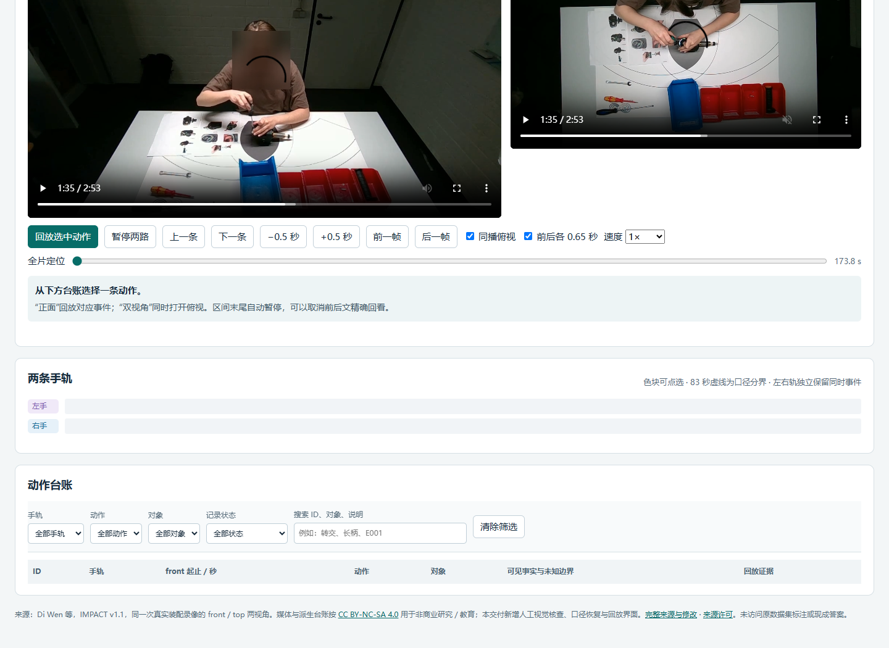
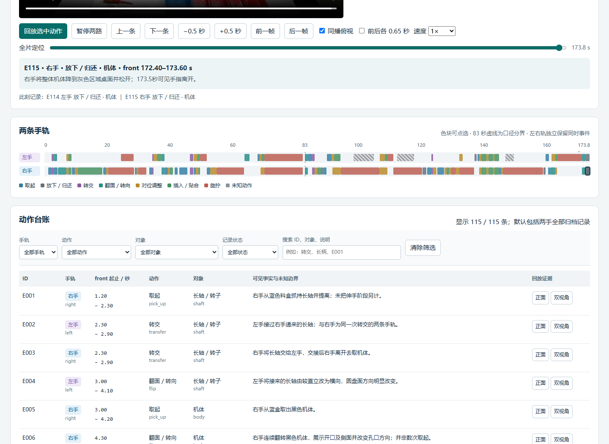

需要辨认的动作
取起、放下／归还、手间转交、翻面、对位调整、插入／贴合、旋拧。区分同一手先后改变的动作，同时保留两手确实参与的并行记录；连续旋拧不按每一圈拆分。
根据口头交接最后确认的归档范围，逐次识别真实装配过程中的取起、转交、对位、贴合、旋拧和翻面，为左右手建立可以回到原片核查的动作记录。
真实工业装配 · 双视角原片 2分53.8秒交接语音 3分18.7秒7类动作 · 9类对象后期合成交接委托场景：培训资料负责人要将一段角磨机装配记录整理成可复查的动作证据。音频中的负责人明确更正操作员建议，确定最终归档口径；Agent需要把这套口径落实到实际画面，而不是只输出几个装配大步骤。
完整输入语音。两种声音分别由负责人、操作员在首次发言中自报角色；只有负责人明确确认／采纳才生效。此录音为后期合成委托，非现场原声。下载WAV。
取起、放下／归还、手间转交、翻面、对位调整、插入／贴合、旋拧。区分同一手先后改变的动作，同时保留两手确实参与的并行记录；连续旋拧不按每一圈拆分。
actions.json动作台账，policy.json最终口径，report.html可搜索筛选与回放的网页，及说明方法、未知项和来源的README.md。
对象采用九个可观察的上位类别。细小紧固件、弹簧和拨件统一接受“小附件”，不要求猜螺钉规格或工具尖端。左手111–118秒、146–150秒的工具尖端协作存在细分歧义，候选和参考均提前排除；不把合理未知或另一种描述当成失败。
| 分项 | 满分 | 判定方式 |
|---|---|---|
| 动作类型 | 35 | 7类分别计算时间相符的F1，再等权平均 |
| 对象 | 20 | 9类独立计算F1；不要求动作与手别同时正确 |
| 手别 | 15 | 左右手独立字段F1 |
| 定位覆盖 | 5 | 只看时间区间的一对一匹配F1 |
| 口头最终口径 | 10 | 两段范围、手轨、动作集合及排除项，按字段给分 |
| 网页交付 | 10 | 完整可读，可搜索筛选，音频与原片区间可回放 |
| 说明与来源 | 5 | 方法、未知项、许可、可靠打开方法 |
各分项加权相加。时间相符接受区间IoU≥0.25，或开始差≤1.2秒且结束差≤2秒。动作、对象、手别分别匹配，不采用整行必须全对的严格口径；另报微平均F1。类别等权可防止高频旋拧覆盖少量但必要的转交和翻面。
题面、材料与评分在试跑前冻结。源研究标签仅作候选参考，normal／anomaly不用于判断故障或责任；自动失分须结合实际画面保守复核，合理合并、遮挡与标签分歧只向上修正。
# 角磨机装配动作证据交接
培训资料负责人给出一份有后续更正的口头交接。请依据其最终确认的归档范围，检查真实装配录像，为操作者左右手分别建立可回放的动作台账。任务关注实际可见动作，不要求判断产品是否合格，不从遮挡推断扭矩、安装成功或运行安全。
## 材料
- `input/front.mp4`：完整正面录像，1280×720、30fps、173.8秒，是唯一报告时钟。
- `input/top.mp4`：同次操作的完整俯视辅助录像，名义时钟相同；不要求恢复亚秒跨视角同步。所有最终时间以front为准，不能因为俯视遮挡而忽略可回查的正面过程。
- `input/handover.wav`：两位角色的后期合成中文交接，明确属于拟制任务要求，不是现场录音。负责人有最终权限；操作员建议须明确获采纳才生效。音频决定最终时间范围、动作范围、手轨与排除项，请恢复为`policy.json`。不要把任务原文当作完整交接口径。
- 本地`local_asr.py`是通用转写工具，没有内置交接逐字稿或答案。允许联网、安装工具、脚本、逐帧查看和本地模型；保留正常网络与代理。不得检索原数据集标注、现成答案或读取本机其他实验目录、作者评分／参考文件。
原始同一次视频的不同视角是辅助证据，不是另一遍操作。输入没有镜像；左右手指操作者自己的解剖左右，正面图像左右会相反。单次物理动作若两手都执行对应工作动作，可在各自手轨各记一条；单纯扶持的手不因此产生工作动作。
## 动作与对象
动作使用七类，不需要猜原始研究的细粒度标签或异常类型：
| action | 含义 |
|---|---|
| pick_up | 从料盒或桌面取起一个对象；伸手尚未取持不独立算一次 |
| put_down | 把对象放回桌面、料盒或归还工具 |
| transfer | 对象由一手转交另一手，该手明确参加转交 |
| flip | 主体或部件明显翻面、改变朝向；普通细微抖动不算 |
| adjust | 对位、调整、摆正或找孔；不能仅凭接近断言接合 |
| fit | 插入、贴合、压入、就位或将部件装到一起；只指可见动作，不证明最终成功 |
| fasten | 手指起扣、手拧或工具旋拧的可见动作；不把每次往复或每转一圈拆成新事件 |
`object`用以下九类：`body`黑色机体／含已插轴的机体，`shaft`长金属轴／转子，`gear`轴周围较小的齿轮状圆件，`adapter_plate`较早取用的平板／环状适配件，`bearing_plate`后续从料盒取出的较大圆盘总成，`small_attachment`细小紧固件／弹簧／拨件，`handle`末段取用的黑色长柄，`screwdriver`各类柄式螺丝刀，`wrench`开口／组合扳手。不需要在遮挡下区分M4／M6、螺钉／垫圈，或猜十字／Torx尖端。可用上位概念小附件；更细名字可在说明写，不因此加减分。
分别沿两只手观察，不要用“安装转子0–32秒”一条大阶段替代其中可区分的取起、转交、对位、插入等事件。反之，同一手、同类动作、同一对象的连续操作不要按手抖、工具往复或原始异常标签切碎；短于0.8秒且未转为其他归档动作的中断可合并。换动作、换对象或明显结束后重新开始应分开。跨口头政策时间界限的事件按开始时所属口径处理并保留完整区间。
看不清动作、对象或手别可将该字段写null，并说明可见事实和未知边界。不要为了凑条数编造。视频没有展示的内部接合结果不在本题要求中。
试跑前已明确的审查排除区间见`input/evaluation_exclusions.json`：左手111–118秒、146–150秒的工具尖端协作准备存在动作细分歧义，不计入各项动作指标；这些区间内的左手候选与参考均排除，不罚合理未知或另一种动作描述。区间用front时钟，事件中点落入时排除，其他手与时间照常。仍可在报告中记录这些观察。
## 交付
写入`output/`：
1. `actions.json`：`{"events":[{"id":"E001","hand":"left","start_s":12.3,"end_s":14.2,"action":"adjust","object":"shaft","evidence":[{"file":"front.mp4","start_s":11.5,"end_s":15.0}],"note":"可见事实与不确定性"}]}`。上述时间是格式示例，不是答案。hand仅为left或right，每条属于一条手轨，可自由安排ID。
2. `policy.json`：包含`first`和`second`两段口头最终范围，各有`start_s`、`end_s`、`hands`数组、`actions`数组；另有`record_holds`布尔、`clock`字符串、`bilateral_as_two_tracks`布尔。这些值从交接音频恢复，不从示例推测。
3. `report.html`：默认展示全部归档动作，可按手、动作、对象和文本筛选；每条能回放front中的对应区间，并能查看top辅助证据。两手可并行，不能把合法同时事件去重掉。保留音频政策回听入口。
4. `README.md`：方法、主要发现、未知项、来源许可及可靠打开方法。无需另导出所有视频短片；可直接用原片时间段跳转，必要时附图。
## 公开评分：独立字段部分分
总分100：动作类型35、对象20、手别15、定位覆盖5、音频最终口径10、网页可用10、说明与来源5。**动作、对象、手别分别计算F1，不以整条所有字段同时正确才算成功。** 一个动作类型正确、对象错的事件仍可得动作分；手别与定位也独立。
每个字段先在时间相符的候选与参考事件间做最大一对一匹配，再在该字段的类别间等权平均F1（动作7类、对象9类、手2类），最后按上述权重相加。如此不会让高频“旋拧／小附件”掩盖少量但必要的取起、转交、翻面等。另报微平均F1作为诊断，主分不使用全记录严格命中率。
时间相符接受区间交并比IoU≥0.25，或开始差≤1.2秒且结束差≤2秒，两者满足其一即可；不苛求逐帧边界。若合理边界、连续合并、遮挡或源标签与实际画面存在分歧，须保守复查，只向上修正／排除争议，不将研究标注当作不可质疑的现场事实。细小对象按以上上位类别评分。
口头政策按字段给部分分，口径时间误差容差0.2秒；这针对清楚读出的范围数字，不是实际动作边界。未知字段不连带取消该事件的其他正确字段。未列出、重复或幻觉事件会影响对应类别的精确率，不能靠大量猜测提升分数。
解题预算90分钟，允许联网。请优先提交可用部分结果，不因少数不确定项不交付。API或作者中断单独记录，不能当模型零分。
完整正式输入（128.0 MiB，无作者答案）：分片1（80.0 MiB） · 分片2（48.0 MiB）。将全部分片、校验清单及PowerShell合并脚本保存到同一目录后运行脚本，逐片校验并生成ZIP。
ZIP SHA256：ddec7d4704385d2f744065357a20578acb839d4ed601717d6d94f1e7d68ac89f。网页两个MP4和WAV均与正式输入逐字节一致，可分别直接下载。
现有产物的保守诊断下界为61.23。运行被原设90分钟上限中止，不能计作完整正式模型成绩；对象定义与分段等价尚未穷尽审计。该版本未达到低综合分难例的筛选目标。
| 模型 | 实际强度 | 耗时 | 产物诊断下界 | 状态 |
|---|---|---|---|---|
| gpt-6.1-sol | xhigh | 90分0.9秒 | ≥61.23 | exit 1 · 90分钟中断 |
真实Codex CLI，NJU Link直连，联网；冻结v4／assembly-av-v4-fields-macro-1。本次原设90分钟截止；运行未正常结束。数字只评价已交付产物，完整语义审计仍待完成，不计作完整正式模型成绩。 设置与耗时 · 诊断下界 · 原始诊断 · 审计说明。
| 分项 | 成绩 |
|---|---|
| 动作类型 | 18.362 / 35 |
| 对象 | 12.771 / 20 |
| 手别 | 9.762 / 15 |
| 定位覆盖 | 3.333 / 5 |
| 音频口径 | 10.000 / 10 |
| 网页 | 2 / 10 |
| 说明与来源 | 5 / 5 |
| 字段 | 类别等权F1 | 微平均F1 |
|---|---|---|
| 动作 | 52.46% | 55.17% |
| 对象 | 63.86% | 59.77% |
| 手别 | 65.08% | 65.52% |
原口径产物诊断 60.319700，已确认保守下界 61.228791。网页按原HTML在Chrome中的实际状态计2/10，说明5/5。只将front.mp4与front视为同一主时钟，恢复0.909091分。工具／受影响零件的对象解释及合理分段仍可能上调；当前下界不是最终校准分。
评审参考与复算脚本（非解题输入） · 原HTML的Chrome取证 · 发布兼容预览验收。
已保留actions.json、policy.json、report.html、README.md及核查图和验证记录。原HTML因顶层top声明报错，默认表格0行；发布兼容预览恢复115行和全部交互，未改模型答案，修复未回填模型得分。
兼容修复预览将脚本放入独立作用域，并适配媒体路径；模型JSON和答案保持原样，修复不计入模型交付得分。原始HTML及附图保留在完整交付包。修复与哈希记录 · 原交付清单。
逐段抽帧建立115条动作记录，再用DOM模拟核验报告交互。
默认先读总结；全部可见命令、输出和回复可展开。保留失败与恢复，脱敏个人路径和凭据；不展示隐藏推理。
Chrome打开原报告即报“Identifier 'top' has already been declared”，表格显示0条。脚本把视频元素命名为顶层const top，碰到浏览器已有的Window.top；这阻止了数据渲染、筛选及事件按钮初始化。内嵌JSON本身与115条原始记录一致，原生音视频控件仍可播放，因此网页保守计2/10。
运行中的Node语法与20项jsdom交互模拟均通过，README也明确真实浏览器实测未完成。发布者将交互脚本封入独立函数作用域，Chrome即恢复115条；双视角首尾跳转、筛选、音频回听与手机布局实测通过。预览清楚标注这项兼容修复，原始HTML和分数继续保留。
const $=id=>document.getElementById(id),front=$('front'),top=$('top'),audio=$('audio');
// 原HTML的Chrome实测错误
SyntaxError: Identifier 'top' has already been declared

例如E065将94.4–106.7秒右手旋拧记为fasten／screwdriver，说明中写明绿色柄螺丝刀持续转动。当前来源参考对应时段按被紧固的小附件归类。题面列出了工具与零件，却没有充分规定object必须取施事工具还是受影响零件；两者不能直接判成同一种识别错误。
这一歧义尚未完成统一等价复算。对象12.77/20属于当前脚本口径，不能读成部件事实正确率；当前61.23仅为已确认的保守下界。完整产物与评审参考可下载复核。
操作 #24 · 操作 #35 · 操作 #60 · 原片94.4–106.7秒
候选含115条，排除2条公开歧义观察后计分113条；参考为61条。只看时间区间时，最大匹配覆盖参考中的58条：召回95.1%、精确率51.3%，F1为66.7%。这只说明时间覆盖，不代表58条的动作类型与对象都正确。
来源参考会将某些连续旋拧合成长段，并合并细标签及normal/anomaly边界；候选则区分取持、对位、贴合、换指和再次操作。部分拆分可能有画面依据，部分也可能过细，需要逐段审查。当前不能将多出的记录一概称为幻觉，完整语义等价审计仍待完成。
操作 #18 · 操作 #25 · 操作 #35 · 操作 #38 · 原片52.8–82.8秒
large-v3-turbo全段转写与medium局部复核均恢复83秒和173.8秒。两手、前半六类动作、后半增加放下／归还、单纯扶持排除，以及操作员建议被否决的结论均正确。
原policy.json使用clock=front.mp4，而脚本参考写front；这是同一主视频的无歧义表达。恢复该单元后，音频口径为10/10，总诊断增加0.909091分。这一轮的低项不能归因为最终交接口径没有听懂。
台账、口径、HTML和说明均已落盘，最后可见命令再次检查四项文件与DOM验证结果；运行器在5400.89秒时按原设上限终止进程，exit1，未收到turn.completed。
因此本页评价的是已有产物，并保留真实中断状态；不计模型零分，也不将诊断下界当作正常完成的正式成绩。原设90分钟是作者本轮运行配置，未形成可跨条件直接比较的完成成绩。